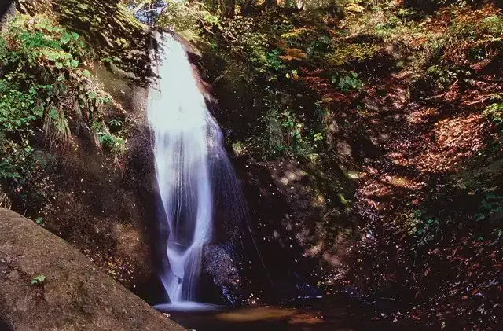
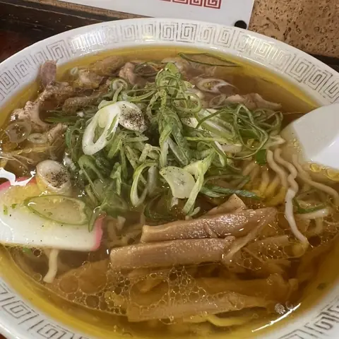
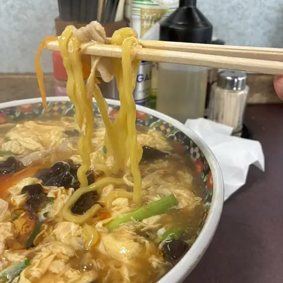
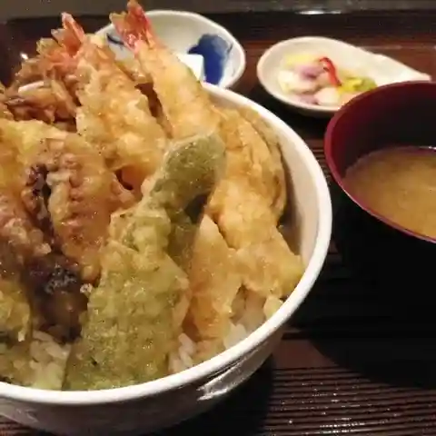
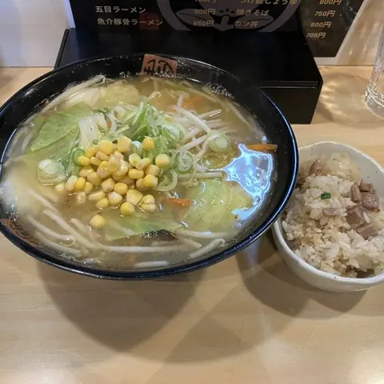
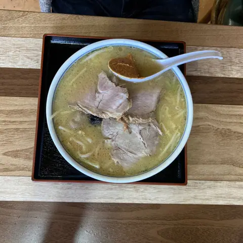
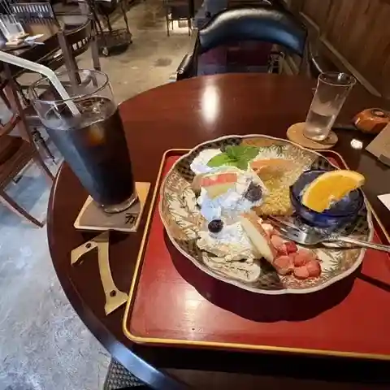
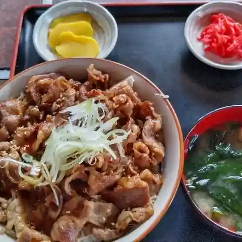

Kaneyama
Kaneyama · Yamagata
Kaneyama
Highlighted on the Yamagata map.

Stay
No listed places to stay in Kaneyama — nearest options in Mamurogawa.
Dining
餃子園

Gyouza Sono
Gyoza restaurant in Kaneyama, Yamagata.
金多楼

Kin Ta Rou
Ramen shop in Kaneyama, Yamagata.
マルコの蔵
Maruko No Kura
Café in Kaneyama, Yamagata.
肴や太郎

Sakana Ya Tarou
Seafood restaurant in Kaneyama, Yamagata.
しょうこ

Shouko
Ramen shop in Kaneyama, Yamagata.
美味処中川

Bimi Tokoro Nakagawa
Ramen shop in Kaneyama, Yamagata.
蔵カフェ

Kura Kafe
Café in Kaneyama, Yamagata.
金山亭

Kanayama Tei
Yakiniku (grilled meat) restaurant in Kaneyama, Yamagata.
栄家
Sakae Ie
Japanese restaurant in Kaneyama, Yamagata.
一福や
Ichi Fuku Ya
Japanese sweets café in Kaneyama, Yamagata.
KAMURO リーベ 金山店
Kamuro Riibe Kanayama Mise
Ramen shop in Kaneyama, Yamagata.
焼鳥ホルモン 堀
Yakitori Horumon Hori
Yakitori restaurant in Kaneyama, Yamagata.
岸伝八菓子店
Kishi Denpachi Kashi Mise
Japanese sweets shop in Kaneyama, Yamagata.
大堰
Ooi
Bento shop in Kaneyama, Yamagata.